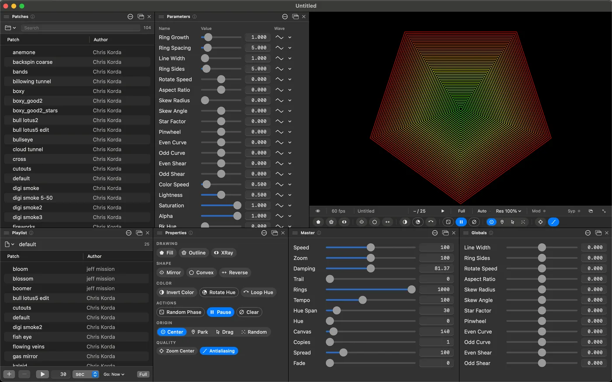
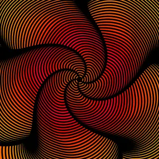
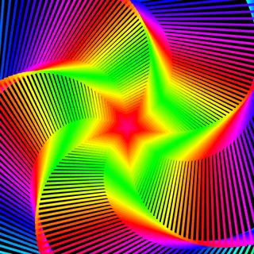
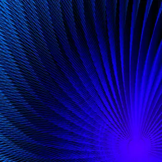
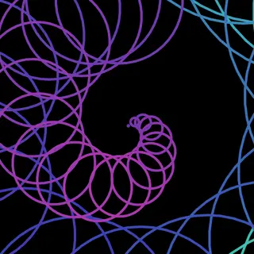

Whorld uses math to make a seamless animation of mesmerizing psychedelic images.
VJ with it, make videos with it, or sit back and watch it.
This is a native macOS port of Chris Korda's free visualizer, and it draws every patch the way the Windows version does.
macOS 14 Sonoma or later · Apple silicon and Intel · Signed and notarized
The app
The picture sits among panels for patches, parameters, the playlist and properties. Drag them to dock, float or tab them, and switch between layouts with a key.

Made for performing
Everything the Windows version does, on the Mac, plus the things a Mac VJ setup needs: Syphon, Ableton Link, Core MIDI and video export.
Fast on Apple silicon
Draws on the GPU with Metal. On an M1 Max, all but the heaviest sample patch hold 120 fps full screen. Intel Macs draw on the CPU with Core Graphics.
Moves to music
Audio modulation drives any control from an audio input, another app, or everything the Mac plays: level, bands, kicks and hats, beats and bars.
Ableton Link
Keeps Whorld's beat in time with other apps on the network. Oscillators can lock to the beat, and patches can change on the next beat, bar or four bars.
MIDI and OSC
MIDI Learn maps any knob or pad through Core MIDI. Everything can also be controlled and monitored over OSC, and a TouchOSC layout is included.
Syphon output
Sends the picture, with transparency, to VJ apps such as Resolume, MadMapper and OBS.
Video export
Renders patches and movies to H.264, HEVC or ProRes, or a video that moves to a music file, with the music as its sound.
Playlists and a Perform Bar
Cue the next patch while one plays, then go. Blackout, Auto Advance and the tempo sit in a bar under the picture, and panels arrange into layouts you switch with a key.
Same files as Windows
Patches, playlists, snapshots and movies are the same files on both platforms, so you can share them with Windows users. 25 sample patches come with the app.
A few patches
Stills from Whorld's demo patches. In the app they never stop moving: every parameter can be driven by oscillators, MIDI, OSC or the music.

Bloom

Digi Smoke

Fish Eye

Yin Yang
Install
Needs macOS 14 (Sonoma) or later, on an Apple silicon or Intel Mac.
Download the disk image
Get Whorld-<version>.dmg from Releases. Releases marked pre-release are betas and release candidates.
Drag Whorld to Applications
Open the disk image and drag Whorld onto the Applications folder.
Open it
Whorld is signed with an Apple Developer ID and notarized by Apple, so it opens like any other downloaded app. It makes a Whorld folder in Documents for your patches, playlists, snapshots, movies and exports.
Help and feedback
New to Whorld?A First Tour of Whorld walks you through it step by step, from what it is to shaping the rings, color and motion. It's also in the app, under Help.
Help > Whorld Help explains what differs from Windows, lists the keyboard shortcuts and the OSC addresses.
Found a bug or want a feature? Choose Help > Report a Bug or Help > Request a Feature, or open a new issue.
Please report Mac problems here, not on the original Whorld's repository.
Using it with other apps
TouchOSC: the layout is mac/touchosc/Whorld.tosc, with a PERFORM page of 16 pads, GO, Blackout and Auto Advance.
Resolume, MadMapper, OBS: pick Whorld as a Syphon source.
Windows Whorld: open its patches and playlists as they are.
Build from source
You need Xcode 16.2 or later and CMake 3.20 or later. Clone with the submodules: Syphon and Ableton Link.
git clone --recursive https://github.com/bzsqrl/Whorld-mac.git
cd Whorld-mac
# engine, renderers, tools and tests
cmake -S mac -B build && cmake --build build && ctest --test-dir build --output-on-failure
# the app
xcodebuild -project mac/app/Whorld.xcodeproj -scheme Whorld build
The source layout, porting rules and plan are in the README. The original Windows source in trunk/Whorld is unchanged.